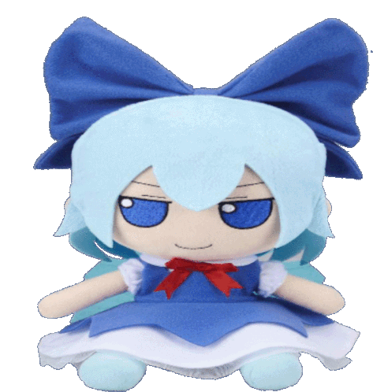

ikupoku
━━━━━━━━━━━━━━━━━━━
━━━━━━━━━━━━━━━━━━━
hi i am ikupoku and this is my website :)
theres not much here right now since i am a GIGA beginner (like less than one week beginner) at coding but trust me there will be some pretty cool stuff here in future so check back in sometime later!!
